Waikiki Travel Guide
Iconic beachfront district known for its high-rise resorts, historic surf culture, vibrant nightlife, and deep-rooted Hawaiian and Polynesian traditions.
Places to See on the Waikiki
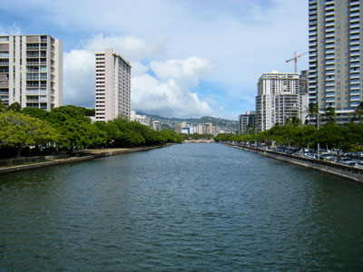
Travis.Thurston, CC BY-SA 3.0, via Wikimedia Commons; Image Size Adjusted
Ala Wai Canal
Man-made waterway lined with walking paths and scenic views, popular for jogging, paddling, and gondola rides.

Eric Tessmer, CC BY 3.0, via Wikimedia Commons; Image Size Adjusted
Diamond Head
Volcanic crater offering a historic hiking trail through tunnels and bunkers with panoramic views of Honolulu and the Pacific Ocean.
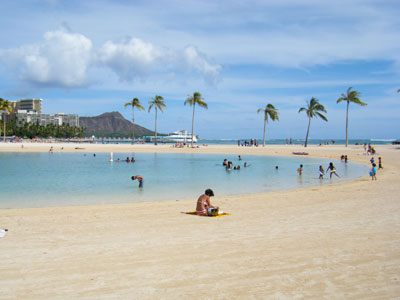
Travis.Thurston, CC BY-SA 3.0, via Wikimedia Commons; Image Size Adjusted
Duke Paoa Kahanamoku Lagoon
Man-made saltwater lagoon with calm, clear waters ideal for swimming, paddleboarding, and family-friendly recreation.
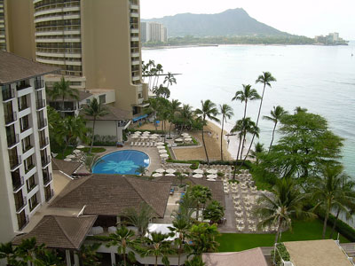
ErgoSum88, Public domain, via Wikimedia Commons; Image Size Adjusted
Halekulani Hotel
Luxury oceanfront resort offering refined accommodations, award-winning dining, and serene views of Waikiki Beach and Diamond Head.
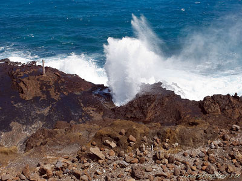
verygreen, CC BY-SA 3.0, via Wikimedia Commons; Image Size Adjusted
Hālona Blowhole
Natural lava tube formation that shoots seawater into the air during high surf, offering dramatic coastal views and photo opportunities.


Hanauma Bay
Marine life conservation area within a volcanic cone offering world-class snorkeling, educational exhibits, and pristine beach access.
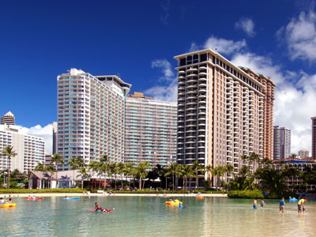
Bernard Spragg. NZ from Christchurch, New Zealand, CC0, via Wikimedia Commons; Image Size Adjusted
.jpg){kind=link}
Hilton Hawaiian Village
Expansive beachfront resort offering multiple towers, saltwater lagoon, cultural activities, spa, and diverse dining options.
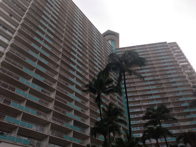
DestinationFearFan, CC BY-SA 4.0, via Wikimedia Commons; Image Size Adjusted

Ilikai Hotel & Luxury Suites
Iconic oceanfront hotel known for its full kitchens, panoramic views, and relaxed luxury near Waikiki Beach and Ala Moana.
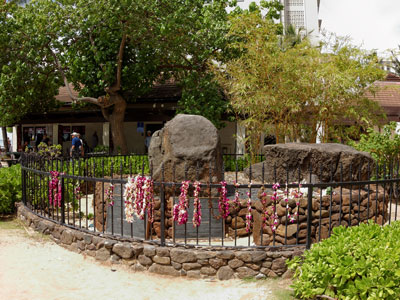
Daniel Ramirez from Honolulu, USA, CC BY 2.0, via Wikimedia Commons; Image Size Adjusted
.jpg){kind=link}
Kapaemahu
Sacred site honoring four legendary healers of dual spirit who brought traditional healing practices to Hawai‘i, marked by ancient stones on Waikīkī Beach.
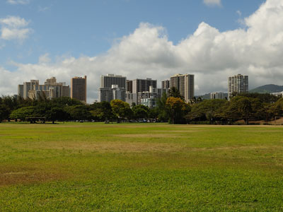
Daniel Ramirez from Honolulu, USA, CC BY 2.0, via Wikimedia Commons; Image Size Adjusted
.jpg){kind=link}
Kapiolani Regional Park
Expansive public park with open green spaces, historic landmarks, and recreational facilities nestled between Waikīkī and Diamond Head.
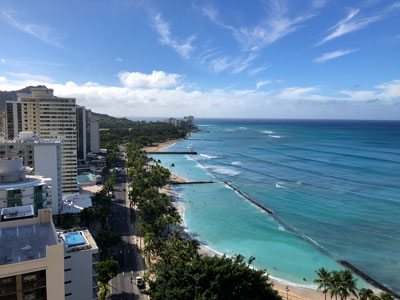
Famartin, CC BY-SA 4.0, via Wikimedia Commons; Image Size Adjusted

Kuhio Beach Park
Family-friendly beach with calm waters, cultural landmarks, and free hula shows set along Waikīkī’s iconic shoreline.
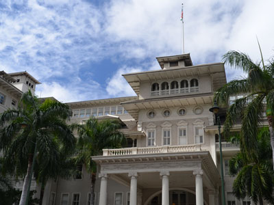
© CC BY-SA Thomas Tunsch / Moana Hotel (a0002460).jpg (Wikimedia Commons), CC BY-SA 4.0, via Wikimedia Commons; Image Size Adjusted
.jpg){kind=link}
Moana Surfrider Hotel
Historic beachfront resort blending Victorian charm with modern luxury, featuring an oceanfront spa, banyan tree courtyard, and cultural experiences.
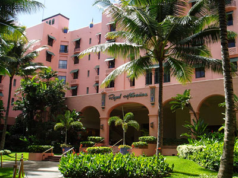
Janine from Honolulu, Hawai'i, United States, CC BY 2.0, via Wikimedia Commons; Image Size Adjusted

Royal Hawaiian Hotel
Iconic pink-hued resort offering historic elegance, beachfront cabanas, cultural activities, and award-winning dining in the heart of Waikīkī.
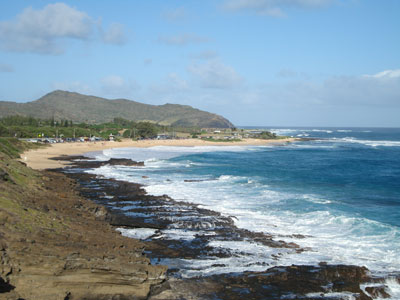
Glenncando at the English-language Wikipedia, CC BY-SA 3.0, via Wikimedia Commons; Image Size Adjusted

Sandy Beach
Secluded stretch of golden sand known for its powerful shore breaks, scenic lava cliffs, and popularity among experienced bodyboarders.
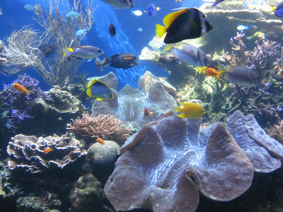
Meowmeow10, CC BY-SA 3.0, via Wikimedia Commons; Image Size Adjusted

Waikiki Aquarium
Oceanfront marine science center showcasing Pacific coral reefs, native Hawaiian species, and conservation exhibits in a family-friendly setting.
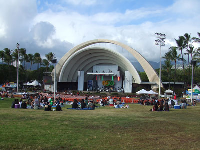
Highsmith, Carol M., 1946-, Public domain, via Wikimedia Commons; Image Size Adjusted

Waikiki Shell
Outdoor amphitheater nestled in Kapiolani Park offering live concerts and cultural events with Diamond Head as a scenic backdrop.
Overview
Waikiki is Honolulu's famous beachfront resort district on the south shore of Oahu, a narrow strip about two miles long between the Ala Wai Canal and the Pacific Ocean, with Diamond Head at its eastern end. It has most of Oahu's hotel rooms and is lined with high-rise resorts, shops and restaurants along Kalakaua and Kuhio Avenues.
Visitors come to Waikiki for its beaches, gentle surf lessons and outrigger canoe rides, sunset views, and hula and music shows. It is also a base for visiting Pearl Harbor, Diamond Head and the rest of Honolulu, and its walkable streets, nightlife and large mix of hotels make it one of the most visited neighborhoods in the United States.
History
Waikiki means "spouting water," after the springs and wetlands that once covered the area, which Hawaiians used for fishponds and taro fields. It was a retreat for Hawaiian royalty and a famous surfing spot, and the first hotel, the Moana, opened in 1901. The Royal Hawaiian opened in 1927, the Ala Wai Canal drained the wetlands in the 1920s, and high-rise hotels arrived after statehood in 1959.
Sightseeing and Popular Landmarks
The statue of Duke Kahanamoku on Kuhio Beach, the Kapaemahu stones, the Royal Hawaiian and Moana Surfrider hotels, and the International Market Place are major sights. Diamond Head is a short trip east, and Hanauma Bay is a popular snorkeling spot beyond it.
Culture and Museums
The Waikiki Aquarium, founded in 1904, displays Hawaiian reef life and monk seals. The Waikiki Shell in Kapiolani Regional Park hosts concerts, and Kuhio Beach has free hula shows and torch lighting ceremonies. The Honolulu Zoo is next to the park, and hotels like the Halekulani and Hilton Hawaiian Village host cultural performances.
Parks
Kapiolani Regional Park is the largest green space, with lawns, a bandstand and the zoo, and Kuhio Beach Park is a calm swimming beach protected by a seawall. Fort DeRussy Beach Park and Queen's Surf Beach provide further sand and picnic areas, and the paths along the Ala Wai Canal are used for walking and paddling.
Seasons and Weather
Waikiki has a warm, sunny climate with highs in the low to mid 80s°F all year and water temperatures of about 77 to 81°F. Winter, from November to March, is slightly rainier, while summer brings the south-shore swells that make the surf best for beginners. Trade winds keep it comfortable, and rain is usually short.
This article uses material from Wikipedia as well as information from official tourism and institutional sources. Key references include Hawaii Tourism Authority, Waikiki, Go Hawaii, Waikiki Beach Services, Waikiki Aquarium, and National Weather Service Honolulu. Wikipedia material is from the article "Waikiki", released under the Creative Commons Attribution-Share-Alike License 3.0.
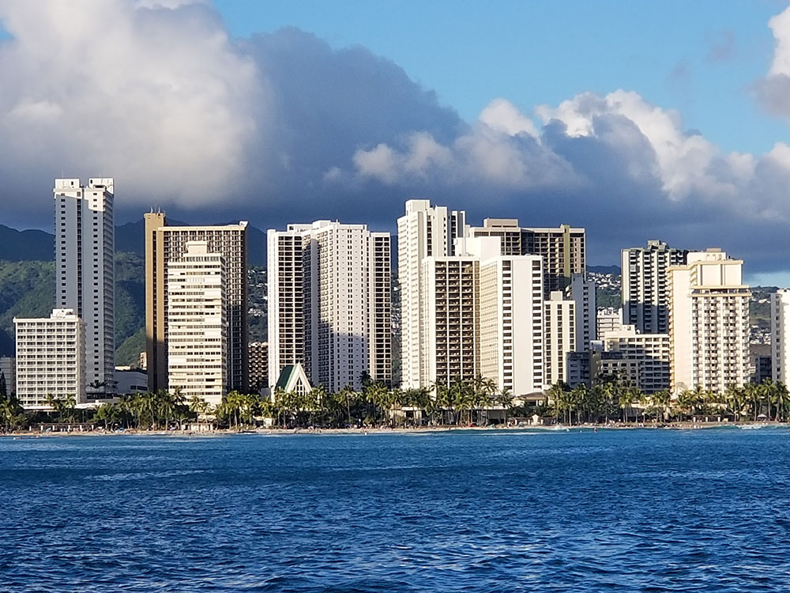

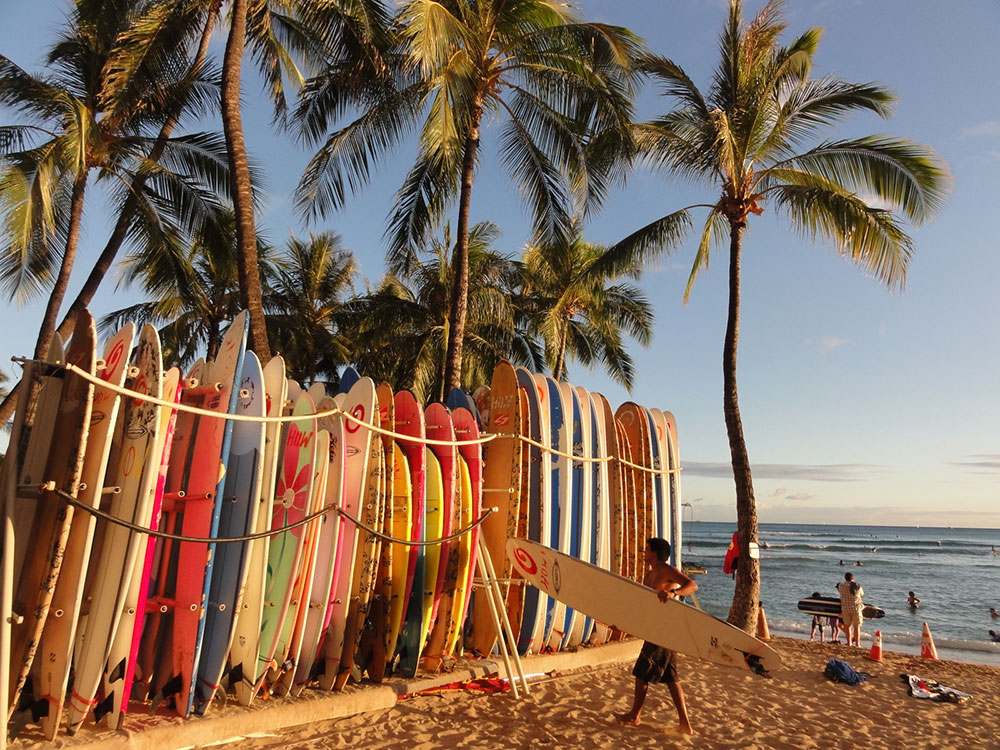

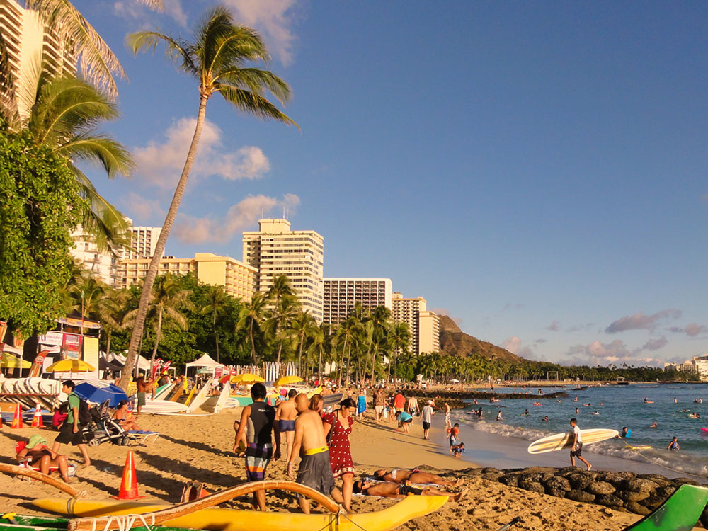

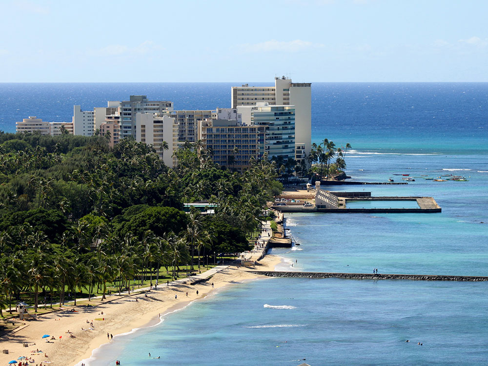
.jpg){kind=link}
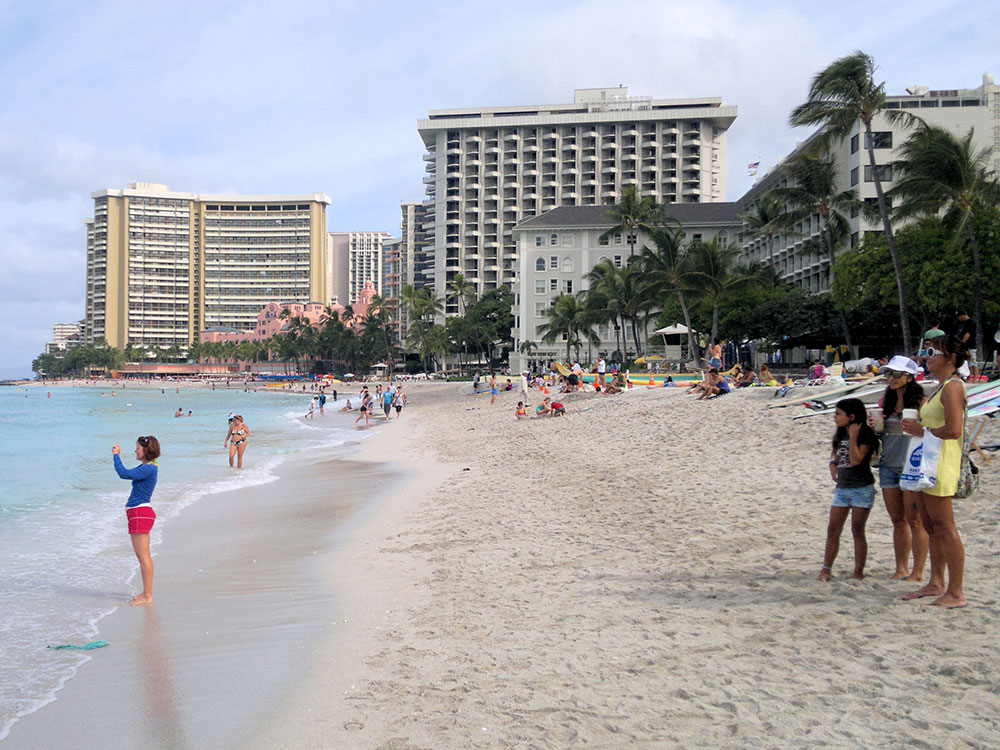